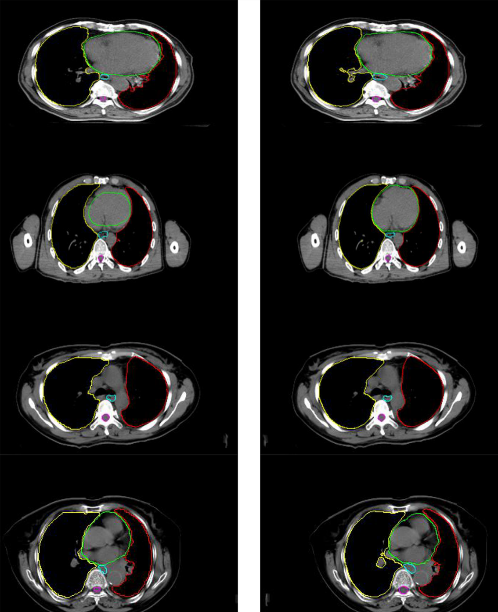
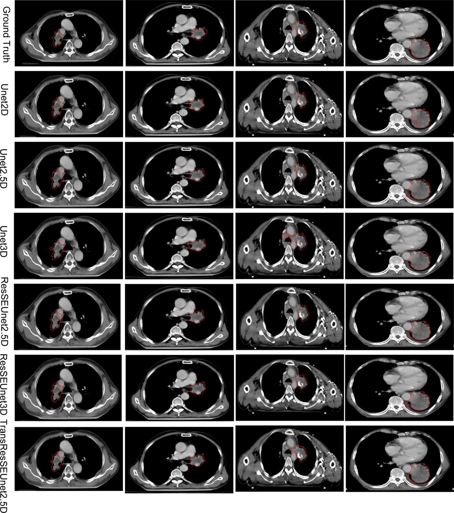

Automatic segmentation of tumor GTV and CTV and direct calculation of radiotherapy dose using MRI and CT images

Published Wed 06 September 2023
In the field of radiotherapy, the manual delineation of tumor target regions by medical professionals is a common practice. Subsequently, the radiation dose required for radiotherapy is calculated based on these annotations.
To improve anatomical clarity and minimize patient radiation exposure, MRI images are often registered and fused with CT images for radiotherapy planning. In our research group, we are dedicated to developing a novel multi-modal fusion technique that automates the segmentation of the target area and facilitates radiation dose calculation. By leveraging artificial intelligence (AI) approaches, we aim to enable the evaluation of patients' radiation therapy outcomes and prognosis.
This research holds significant potential to enhance the accuracy and efficiency of radiotherapy planning, reducing the burden on medical professionals and optimizing treatment strategies for individual patients. By automating the segmentation process and integrating multi-modal imaging data, we can improve the precision of target area delineation and ensure that radiation doses are tailored precisely to each patient's needs. Ultimately, the incorporation of AI techniques has the potential to revolutionize radiotherapy treatment planning and contribute to better patient outcomes in the field of oncology.
Project leaders
JunqiangMa
Application of Deep Convolution Network to Automated Image Segmentation in Radiotherapy of Patients with Tumor

Published Fri 22 March 2024
To automate the delineation of tissues and organs in oncological radiotherapy by integrating deep learning techniques, specifically the fully convolutional network (FCN) and atrous convolution (AC)
A dataset consisting of 120 sets of chest CT images from patients was selected, with structures of normal organs outlined by radiologists. From this dataset, 70 sets (comprising 8,512 axial slice images) were allocated for training, 30 sets (5,525 axial slice images) for validation, and 20 sets (3,602 axial slice images) served as the test set. Five established FCN models were chosen, and subsequently combined with AC algorithms to develop three enhanced deep convolutional networks termed Dilation Fully Convolutional Networks (D-FCN). The training set was used to fine-tune and train each of the eight networks independently. The validation set was employed during the training process to assess the performance of the networks in automatically identifying and delineating organs, thereby determining the optimal segmentation model for each network. Ultimately, the test set was used to evaluate the optimally trained segmentation models, comparing their similarity coefficients (Dice) between automated and manual delineation by physicians.
Following comprehensive fine-tuning and training with the training image set, all networks within this study performed effectively in automated image segmentation. Among them, the advanced D-FCN 4s network model demonstrated superior performance in the test experiment, achieving an overall Dice score of 87.11%, with respective scores for the left lung, right lung, pericardium, trachea, and esophagus being 87.11%, 97.22%, 97.16%, 89.92%, and 70.51%.
We proposed an improved D-FCN model. The experimental results indicate that this network model can significantly enhance the accuracy of automatic segmentation in thoracic radiotherapy images and is capable of performing automatic segmentation of multiple targets simultaneously.
Project leaders
HuiXie
Partner Organisations
湘南学院附属医院
Project Example
The comparison between the automated segmentation delineation of some test cases and the manual delineation results of the radiologist. In the figure, each horizontal line lists a comparison of different test cases. The left side is delineated by physicians and the right side by the D-FCN4s model automatically.
Automatic segmentation of the gross target volume in radiotherapy for lung cancer using transresSEUnet 2.5D Network

Published Fri 22 March 2024
This paper intends to propose a method of using TransResSEUnet2.5D network for accurate automatic segmentation of the Gross Target Volume (GTV) in Radiotherapy for lung cancer.
A total of 11,370 computed tomograms (CT), deriving from 137 cases, of lung cancer patients under radiotherapy developed by radiotherapists were used as the training set; 1642 CT images in 20 cases were used as the validation set, and 1685 CT images in 20 cases were used as the test set. The proposed network was tuned and trained to obtain the best segmentation model and its performance was measured by the Dice Similarity Coefficient (DSC) and with 95% Hausdorff distance (HD95). Lastly, as to demonstrate the accuracy of the automatic segmentation of the network proposed in this study, all possible mirrors of the input images were put into Unet2D, Unet2.5D, Unet3D, ResSEUnet3D, ResSEUnet2.5D, and TransResUnet2.5D, and their respective segmentation performances were compared and assessed.
The segmentation results of the test set showed that TransResSEUnet2.5D performed the best in the DSC (84.08 ± 0.04) %, HD95 (8.11 ± 3.43) mm and time (6.50 ± 1.31) s metrics compared to the other three networks.
The TransResSEUnet 2.5D proposed in this study can automatically segment the GTV of radiotherapy for lung cancer patients with more accuracy.
Project leaders
HuiXie
Partner Organisations
湘南学院附属医院
Project Example
Results of different network structures for the GTV segmentation of radiotherapy for lung cancer.
© Generalized Electric Medicine 2023 of Macao polytechnic university.
The Generalized Electric Medicine is part of the Macao polytechnic university.